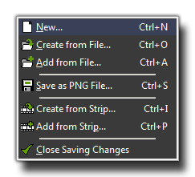
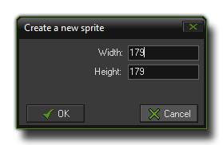
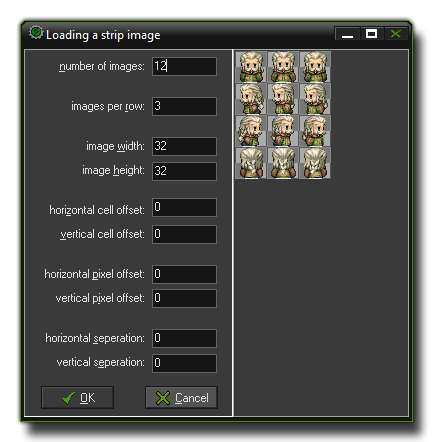

The Sprite Editor File Menu
This section explains the file menu functions associated with the GameMaker:Studio sprite editor.

The file menu contains a number of commands related to loading and saving sprites, which are all explained below :
- New : This will create a new, empty sprite with the dimensions you specify in the following window :

The width and height that you input here will be the base size for all sub-images of your sprite.
- Create from File : You can use this option to select a file and use that to create a new sprite. Many file types can be used, including bmp, png, jpeg and gif, and they will all generally create a sprite consisting
of a single sub-image, except for animated GIF files that are split into the sub-images. If you use a strip and the name of the file ends with _stripXX then GameMaker:studio will also split this sprite up into its
component sub-images. For more details on the various load options see Defining Sprites
- Add from File : Adds an image (or multiple images) from the selected file to the current sprite. If the images do not have the same size you can choose where to place them or to stretch them from the window
that pops up. You can also select multiple images from the file manager and they will all be loaded into the sprite as separate sub-images.
- Save as PNG File : This will save the sprite as a strip in a *.png format file. A name is automatically generated from the name of the sprite in the resource tree, and when the sprite has multiple sub-images the
text _stripXX (with XXbeing the number of sub-images) is automatically appended. Of course you can name the image file whatever you wish, but if you want GameMaker:Studio to be able to load
it at a later date and maintain the sub-images, then you should maintain the _stripXX format at the end.
- Create from Strip : This option permits you to load a non-standard (ie: the name does not have _stripXX at the end) image file into GameMaker:Studio as a strip of sub-images. The following
window will open where you can set how this is to be achieved :

GameMaker:Studio has a number of options to help you adjust the spacing of the sub-images within the sprite strip to get the optimum results. These options are :
Number of images : This is the total number of sub-images that the sprite contains.
Images per row : Here we specify the number of sub-images that are in each row of the image file.
Image width and image height : The width and height (in pixels) of each sub-image.
Horizontal and vertical cell offset : A "cell" here is one space the size of the above mentioned width and height, so setting this will offset the starting point of the sub-images.
Horizontal and vertical pixel offset : As above, but this time the starting coordinates are defined in pixels rather than cells.
Horizontal and vertical separation : Sometimes a sprite strip has spaces ("buffer" zones) around each of the individual sub-images. these zones can be eliminated by this setting.
- Add from Strip : Use this to add sub-images to the current sprite from an external file where they are in a strip format. See above for the window that this opens.
- Close Saving Changes : Closes the form, saving the changes made to the sprite. If you don't want to save the changes, click on the close button of the form.
© Copyright YoYo Games Ltd. 2013 All Rights Reserved